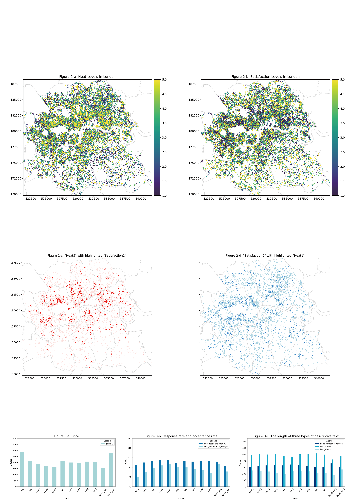
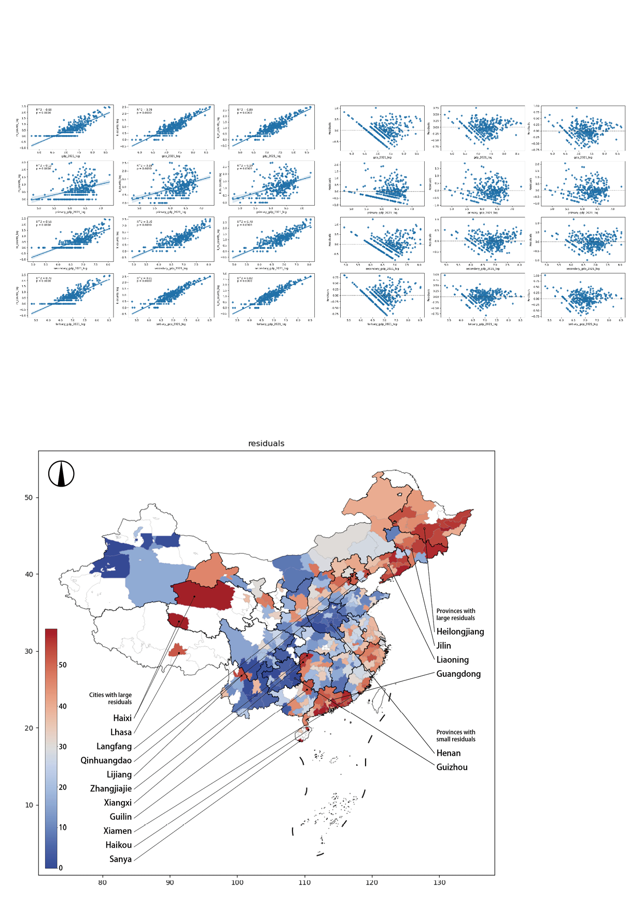
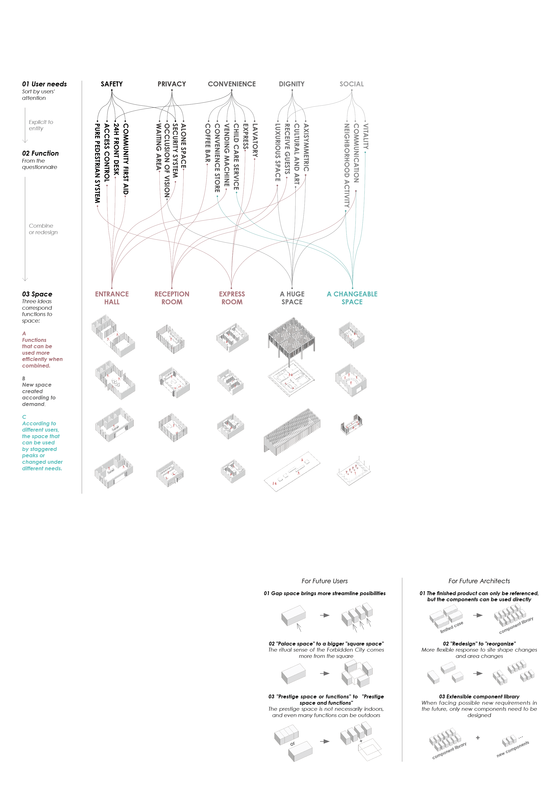
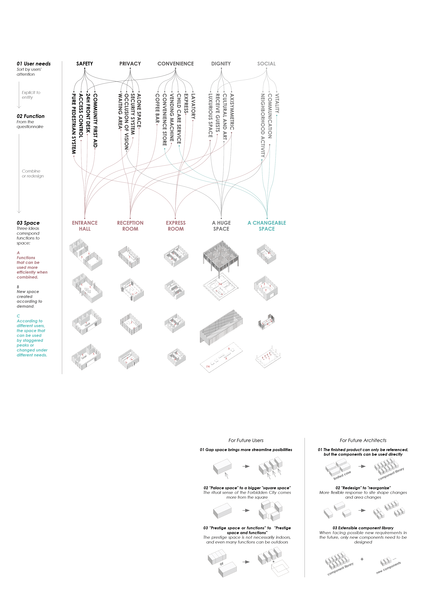
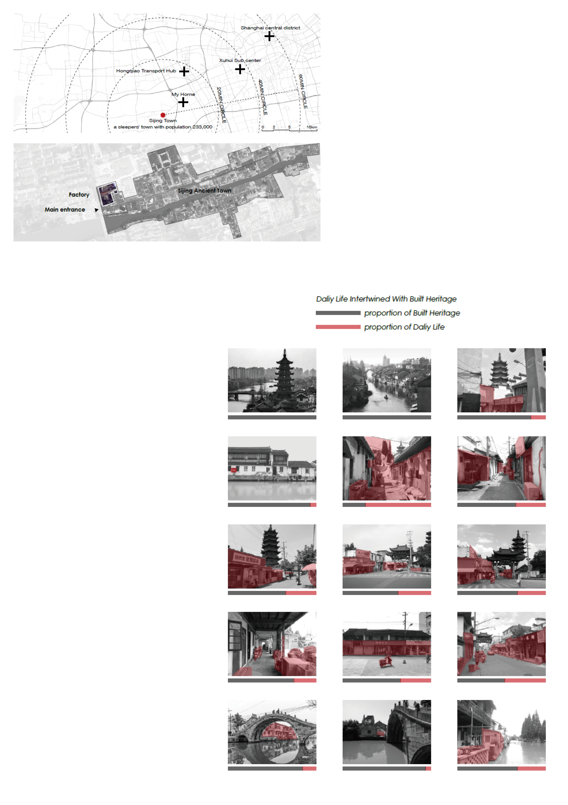
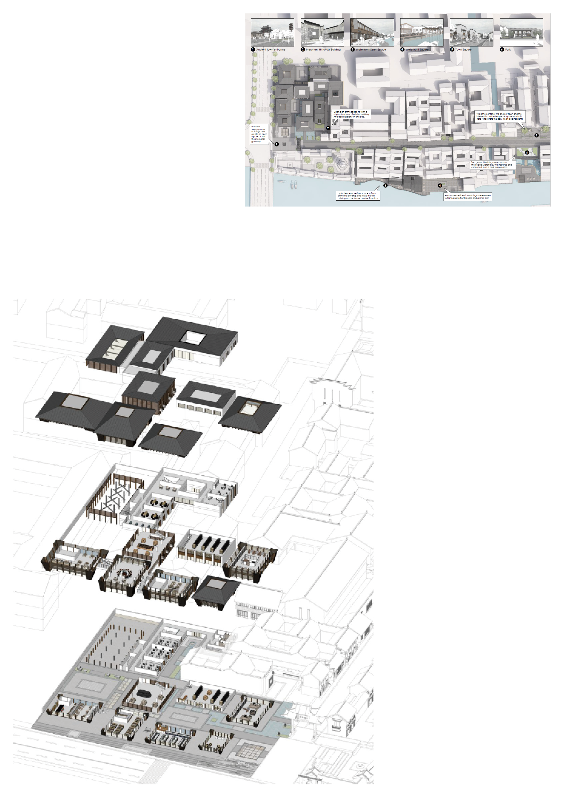
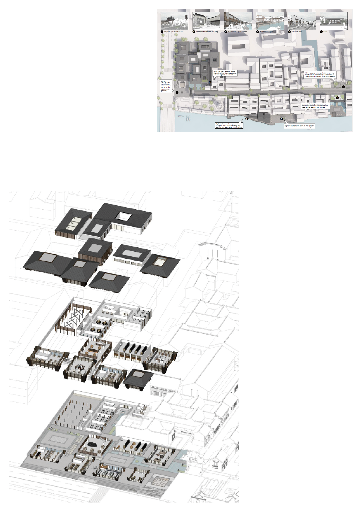
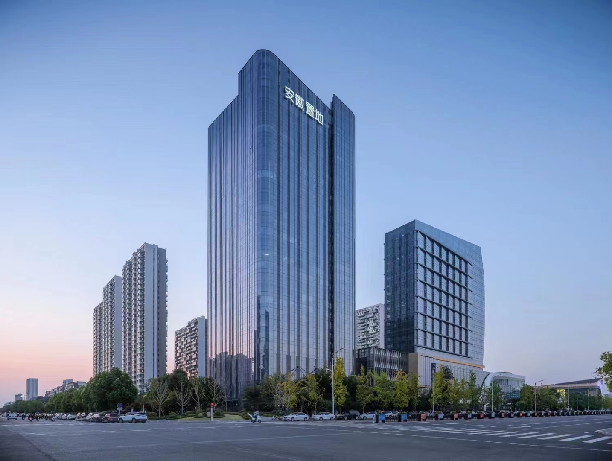
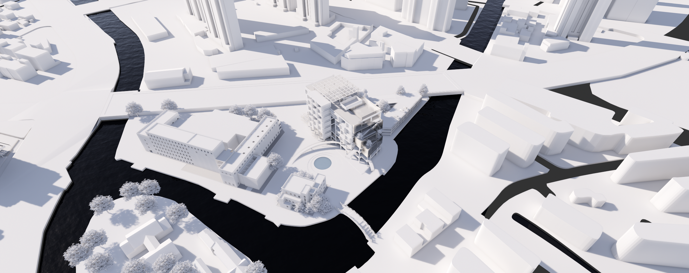
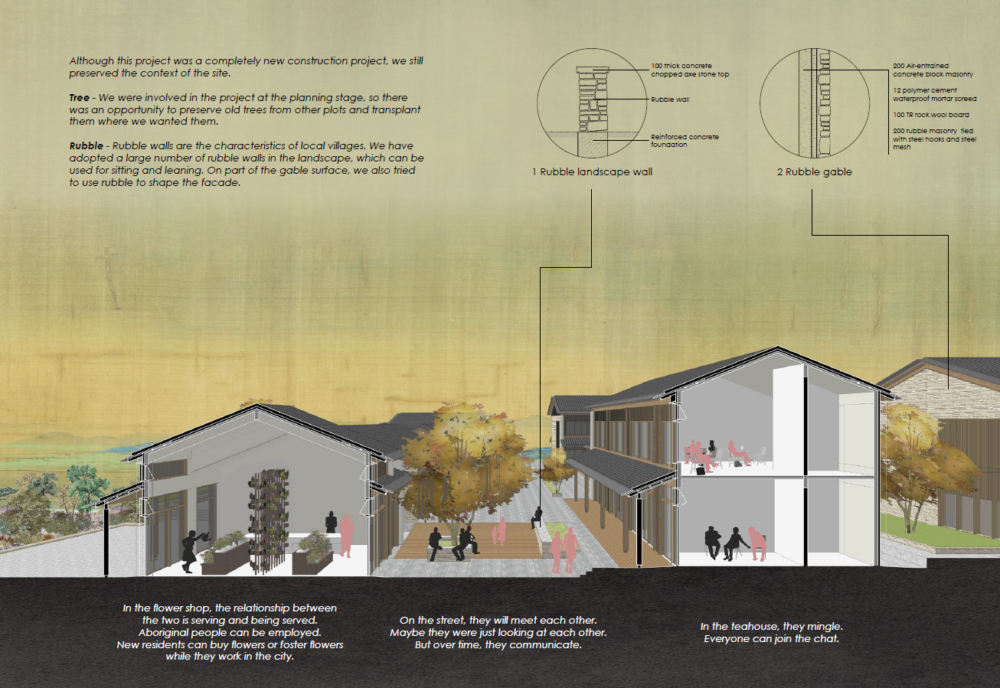

教育背景
◼ 教育经历
2014.09‑2018.07 同济大学 | 土木工程学院 | 建筑工程系 | 土木工程专业 | 工学学士
2023.09‑2024.09 伦敦大学学院 | 巴特莱特学院 | 高级空间分析中心 | 城市空间科学专业 | 理学硕士
◼ 获奖经历
2014.12 同济大学2014年新生结构赛 | 第一名 | 团队项目 | 负责计算，参与模型制作
2015.06 第16届大学生结构竞赛 | 三等奖 | 团队项目 | 参与计算和模型制作
2015.09 同济大学2015年国际建造节 | 土木工程学院代表队 | 团队项目 | 参与造型设计和构筑物搭建
2015.12 同济大学优秀学生奖学金 | 三等奖
◼ 科研经历
2016.05-2017.05 大学生创新项目“校园内道路减速带系统对自行车交通影响的分析” | MATLAB数据分析建模
2017.05-2018.04 导师制项目“面向美丽乡村建设的标准化轻钢住宅体系开发设计” | 背景调研，文献综述
2023.12-2024.01 “空间数据科学基础”课程团队课题“伦敦InsideAirbnb数据分析” | python可视化，报告撰写
2024.01-2024.01 “定量方法”课程个人定量研究报告“探究中国地级市GDP与连锁店数量的关系” | 回归与残差分析，可视化
2024.03- “空间系统数据科学”课程个人数据分析报告 | （进行中）
2024.03- “空间大数据应用开发”课程团队项目 | （进行中）
2024.03- “毕业论文” | （RP阶段）
◼ 组织经历
2015.04-2016.10 同济大学学生会 权益保障与生活福利部 | 2015年优秀干事 | 负责微信平台运营，参与校园活动策划
职业背景
◼ 工作经历
2019.04‑2022.11 水石设计(上海) | 助理设计师(2019) - 设计师 (2020) - 助理项目负责人 (2021)
◼ 产品研发
2022.03‑2022.09 “绿城中国社区大堂标准化体系研发” | 前期研究 | 体系搭建 | 文本撰写 | 案例设计
◼ 建筑设计
2019.07‑2022.08 “阜阳双清湾城市综合体” | 安徽，阜阳 | 扩初设计 | 施工配合
2020.03‑2020.07 “凤凰湾邻里中心” | 山东，日照 | 前期研究 | 概念设计 | 平面设计 | 效果表达
2020.12‑2022.11 “希尔顿青城山酒店” | 四川，成都 | 前期研究 | 概念设计 | 平面设计 | 效果表达 | 文本撰写
◼ 城市更新
2019.05‑2019.08 “泗泾古镇再生项目” | 上海，松江 | 前期研究 | 场地调研 | 要素提炼 | 概念设计 | 效果表达
2022.05‑2022.11 “无锡中心城区地块更新项目” | 江苏，无锡 | 前期研究 | 概念设计 | 平面设计 | 文本撰写
◼ 区域规划
2019.08‑2020.06 “马陵水库区域规划项目” | 山东，日照 | 前期研究 | 效果表达
2020.09‑2020.12 “怀远县城市规划项目” | 安徽，蚌埠 | 前期研究 | 数据分析 | 规划设计 | 效果表达 | 文本撰写
专业技能
◼ 软件与编程语言
熟练 AutoCAD | Sketchup | Photoshop | Indesign | Enscape | Python | R | Netlogo
了解 Illustrator | QGIS | SQL | Rhinoceros | Lumion | Matlab | ArcGIS | Premiere Pro | GEE | Figma
◼ 语言能力
中文(普通话二级甲等)
英文(IELTS 7.0)
本科概览
◼ 基础信息
同济大学-土木工程学院-建筑工程系-土木工程专业
专业成绩：85.35/100 | 4.04/5 毕设成绩：优
◼ 核心课程
数学类：高等数学，线性代数，概率论与数理统计，数学建模，数值计算
编程类：大学计算机，C++语言，软件开发技术基础
力学类：理论力学，材料力学，结构力学，结构动力学，流体力学，弹性力学，土力学，薄壁杆件力学
专业课：混凝土原理与结构设计，钢结构原理与结构设计，基础工程设计原理，木结构，高层建筑结构，抗震设计
重点经历
◼ 竞赛相关
这里是本科期间重要竞赛的相关记录，区别于课程成绩体现的理论知识素养，更多体现实践能力和团队合作能力。

◼ 科研相关
这里提供了本科期间大学生创新项目和同济大学第一届导师制科研课程的相关记录。

硕士概览
◼ 基础信息
伦敦大学学院(UCL)-巴特莱特学院(The Bartlett)-高级空间分析中心(CASA)-城市空间科学专业(Urban Spatial Science)
专业成绩：（待毕业后补充）
◼ 专业课程
CASA0001: Urban Systems Theory | 城市系统理论 | 城市化、系统和复杂性理论、城市形式和功能、流动性
CASA0002: Urban Simulation | 城市仿真建模 | 空间交互模型与网络科学
CASA0005: Geographic Information Systems and Science | 地理信息系统和科学 | QGIS与R语言
CASA0006: Data Science for Spatial Systems | 空间系统数据科学 | 机器学习与因果推断
CASA0007: Quantitative Methods | 定量方法 | 线性回归、假设检验、聚类、线性规划、空间优化、统计谬误、系统动力学
CASA0011: Agent Based Modelling for Spatial Systems | 基于代理的空间系统建模 | ABM的概念与Netlogo语言
CASA0013: Foundations of Spatial Data Science | 空间数据科学基础 | Python语言
CASA0025: Building Spatial Applications with Big Data | 空间大数据应用开发 | GEE与SQL
CASA0010: Urban Spatial Science Dissertation | 毕业论文
重点项目
◼ 伦敦InsideAirbnb数据分析
◼ 探究中国地级市GDP与连锁店数量的关系
工作概览
◼ 基础信息
水石设计(上海) | 助理设计师(2019) - 设计师 (2020) - 助理项目负责人 (2021)
◼ 项目经历
『项目说明』
简历里选取的为代表性项目
这里将给出所有参与度较高的项目经历
部分短期项目或参与度较低项目不再罗列
『研发项目』
绿城中国社区大堂标准化体系研发
四川民居风貌要素研究
『建筑设计』
阜阳双清湾城市综合体
凤凰湾启动区
凤凰湾邻里中心
黑河中俄跨境物流枢纽项目
希尔顿青城山酒店
日照凤凰湾中式别墅区
滕州滨河地块（大平层+别墅）
『城市更新』
泗泾古镇再生项目
无锡中心城区地块更新项目
『区域规划』
青岛平度采石场遗址及周边规划
马陵水库片区规划
陵水县郊片区规划
北戴河新开口渔港规划
怀远县城市规划
利辛县滨河新区规划
秦皇岛北部长城文化旅游带规划
怀来葡萄酒庄园规划
南京栖霞广厅地块规划
大连金石滩滨海旅游度假区规划
科大讯飞人工智能小镇规划投标
作品集
◼ 绿城中国社区大堂标准化体系研发
这个项目十分新颖，除了设计过程的模块化考虑外，最终成果是一份指导其他未来设计师的手册，这是第一次将建筑师作为未来用户去仔细考虑其用户体验的设计过程。我在留学申请作品集中详细展开了这个项目的设计，下方是简要展示。
 

◼ 泗泾古镇再生项目
由于我的住处距离泗泾古镇仅一站地铁，因此在这个项目期间，我前往场地许多次，拍下了全部的立面和大量细节。不过这里更重要的是展示对于一个极为复杂的项目，通过分类，流程化去将其处理为有限种类的批量设计的过程。我在留学申请作品集中详细展开了这个项目的设计，下方是简要展示。
 

◼ 其他项目
下面是其他项目的部分资料，仅供简单展示。
阜阳双清湾城市综合体
该项目已建成，图示内容为建筑摄影
无锡中心城区地块更新项目
图示内容为项目地块的风格化渲染
凤凰湾邻里中心
图示内容为留学申请作品集中的剖透视
◼ POTRFOLIO
留学申请采用的作品集由工作项目改编或重绘，其中部分内容涉及工作项目的详细信息，如需要可根据首页信息联系我获取。